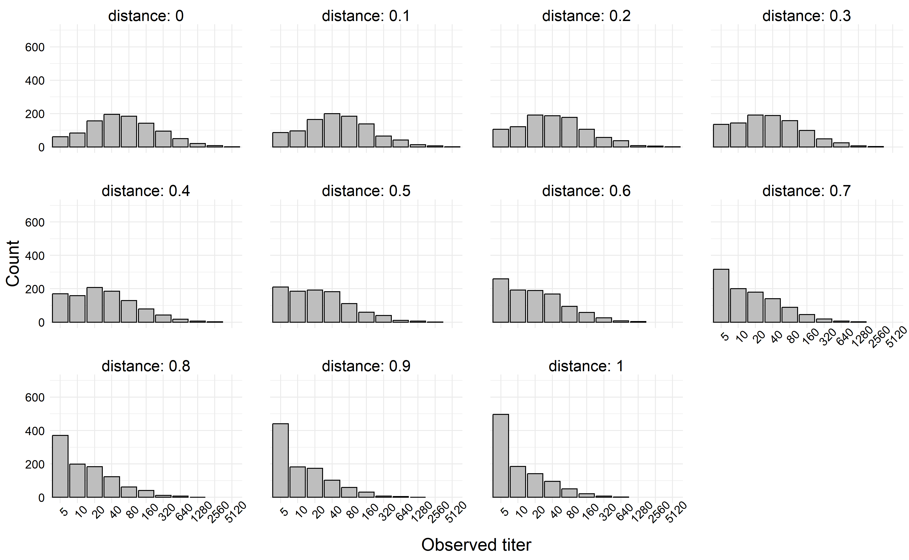
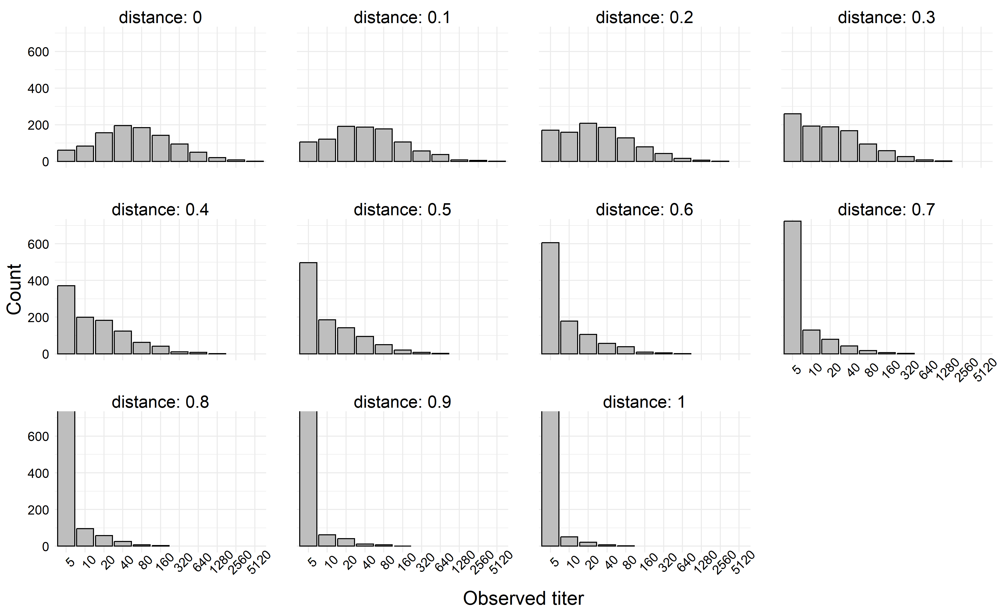

one_titer_sim <- function(N = 1e4, seed = 370, mean = 3, sd = 1) {
set.seed(seed)
sim <-
tibble::tibble(
# Assume log(titer) is drawn from a normal distribution
raw_log_titer = rnorm(N, mean, sd),
# If we observe a titer with log(titer) < 1 (LOD), mark it as 0
trunc_log_titer = ifelse(raw_log_titer >= 1, raw_log_titer, 0),
# The assay is dilution based, so we only observe the floor of each
# value.
rounded_titer = floor(trunc_log_titer),
# Now final observed titer is equal to this transformation.
sim_titer = 5 * 2 ^ rounded_titer
) |>
dplyr::arrange(raw_log_titer)
}In my previous blog post I talked about how to simulate a common type of immunological titer data, which is subject to both interval censoring and a lower limit of detection. In that blog post, we describing the data generating process for the observed values, and our simulation depended on the prespecification of the mean and variance of the distribution. In this blog post, we’ll discuss how we can extend the data generating process to include other variables. In particular, my research focuses on how antigenic distance can affect these titer values, but the way I’ll extend these simulations is very general.
First let’s review the data-generating process – this is actually probably better written than my original post on this, because I’ve been thinking about these issues a lot and trying to improve my descriptions and notations.
Data-generating process without covariates
If we recall our DGP from the previous post, \[ \begin{aligned} z_i^* &\sim \mathcal{N}\left(\mu, \sigma^2\right) \\ z_i &= \max\left\{0, \left\lfloor z_i^* \right\rfloor \right\} \\ y_i &= g(z_i) = 5 \cdot 2 ^{z_i} \end{aligned} \] This data generation process is composed of the following parts:
- The log-scale latent titer, \(z_i^*\), which is a real-valued random variable;
- The log-scale censored titer, \(z_i\), which is a nonnegative integer- valued random variable. This reflects the limit of detection – our transformation function \(g(\cdot)\) which takes us from the natural scale to the log scale ensures that the limit of detection is represented as \(0\) on the log scale. So if \(z_i\) is below the log-scale LoD, it gets rounded up to \(0\). Otherwise, we take the floor of the underlying titer to represent interval-censoring in our measurements.
- The natural-scale observed titer, \(y_i\), is a nonnegative integer on the natural scale and so takes values in the set \(\{5, 10, 20, 40, \ldots \}\). This value has been censored and transformed back to the natural scale.
This data generating process assumes that the latent titers follow a log-normal distribution. Another plausible model would be a gamma distribution, which is somewhat more annoying to deal with, so we’ll deal with that in a future post.
Now, I promised we would incorporate some covariates, so that’s what we’ll do next.
Perfectly known covariates and linear models
There are a lot of different ways to incorporate covariates into this type of model, but the most common way by far is to make the mean titer value dependent on the value of some covariate, i.e., we would add the line \[\mu_i = f(x_i) \] to the DGP above. Choosing the correct function here is a very complex problem which relies on “good-enough” approximations in the real world. One incredibly simple, but also very useful, function is the simple linear regression model. Linear models cover a wide range of patterns, but in the simple linear model, we assume that \(f(x) = \beta_0 + \beta_1 x\), which is a linear function of \(x\). For my specific example of incorporating antigenic distance, \(d\) into the data generating process, we’ll use this simple linear regression model.
At the risk of repeating a lot of text, our data generating process when the mean of the titer depends on the antigenic distance in a linear relationship is as follows.
\[ \begin{aligned} z_i^* &\sim \mathcal{N}\left(\mu_i, \sigma^2\right) \\ \mu_i &= \beta_0 + \beta_1 \cdot d_i \\ z_i &= \max\left\{0, \left\lfloor z_i^* \right\rfloor \right\} \\ y_i &= g(z_i) = 5 \cdot 2 ^{z_i} \end{aligned} \]
We would expect \(\beta_0 > 0\) and \(\beta_1 < 0\) here. The parameter \(\beta_0\) would correspond to the homologous immune response – we’re testing the HAI titer against the exact same strain a person has been exposed to. The parameter \(\beta_1\) then represents the expected decrease in the immune response as a test strain becomes further away from the exposure strain. If we normalize our distances to fall in \([0, 1]\), where \(0\) is the homologous strain and \(1\) is the maximally different strain (although still not completely different, depending on the sample), we would also note that \[E[y \mid x = 1] - E[y \mid x = 0] = \mu(1) - \mu(0) = \beta_1,\] so we can interpret \(\beta_1\) as the difference in the mean response between the maximally distant strain and the homologous strain. If the maximally distant strain should represent a completely novel strain for which there should be no immune response, we could enforce the constraint \[\mu_i(1) = 0 \implies \beta_0 + \beta_1 = 0,\] which is linear and could be incorporated into a solution using a constrained maximum likelihood estimation framework.
The data is easy to simulate, similar to the previous example. For a test example, we assume that we can choose which antigenic distances to measure, and at each antigenic distance, we obtain some number of independent titer values (we could relax the independence assumption here by using a more complex model, but we choose not to deal with that right now).
For this example, we’ll set our distances for each individual to be \(d_i = \{0, 0.1, 0.2, \ldots, 1.0\}\), and we’ll assume we have \(1000\) individuals. We collect their titers at each distance. For our simulation parameters, we’ll set \(\beta_0 = 4\), \(\beta_1 = -3\), and \(\sigma^2 = 2\).
We start with the same simulation function we used previously.
Then, we calculate the value of \(\mu_i\) at each value of \(d_i\), and draw 1000 observations at each \(\mu\) value.
ex_dist_sim <-
tibble::tibble(
d = seq(0, 1, 0.1),
mu = 4 - 3 * d
) |>
dplyr::mutate(
sim = purrr::map(mu, \(x) one_titer_sim(1000, mean = x, sd = 2))
) |>
tidyr::unnest(sim)
plt <-
ex_dist_sim |>
dplyr::mutate(
sim_titer = factor(sim_titer),
mu = factor(mu) |> forcats::fct_inorder(),
distance = factor(d) |> forcats::fct_inorder()
) |>
ggplot() +
aes(x = sim_titer) +
geom_bar(col = "black", fill = "gray") +
facet_wrap(~distance, labeller = "label_both") +
labs(
x = "Observed titer",
y = "Count"
) +
theme(axis.text.x = element_text(angle = 45)) +
coord_cartesian(ylim = c(0, 700))
fn <- here::here("posts", "2023-08-10_Titer-w-Distance", "thumbnail.png")
ggsave(
filename = fn,
plot = plt,
width = 13,
height = 8
)
knitr::include_graphics(fn)
If we simulate a more extreme example, say where \(|\beta_1| > \beta_0\), we can generate titers which decay rapidly towards the limit of detection. In the next simulation, we left all simulation parameters the same except we set \(\beta_1 = -6\).
ex_dist_sim <-
tibble::tibble(
d = seq(0, 1, 0.1),
mu = 4 - 6 * d
) |>
dplyr::mutate(
sim = purrr::map(mu, \(x) one_titer_sim(1000, mean = x, sd = 2))
) |>
tidyr::unnest(sim)
plt <-
ex_dist_sim |>
dplyr::mutate(
sim_titer = factor(sim_titer),
mu = factor(mu) |> forcats::fct_inorder(),
distance = factor(d) |> forcats::fct_inorder()
) |>
ggplot() +
aes(x = sim_titer) +
geom_bar(col = "black", fill = "gray") +
facet_wrap(~distance, labeller = "label_both") +
labs(
x = "Observed titer",
y = "Count"
) +
theme(axis.text.x = element_text(angle = 45)) +
coord_cartesian(ylim = c(0, 700))
fn <- here::here("posts", "2023-08-10_Titer-w-Distance", "p2.png")
ggsave(
filename = fn,
plot = plt,
width = 13,
height = 8
)
knitr::include_graphics(fn)
Conclusions
In this relatively short post, I showed a quick example of including distance as a covariate in a linear model for titers. There are a couple more things we need to do for an HAI manifesto though, and we’re currently working on them right now! Not sure if they will be blog posts or part of something else though. Importantly, we might be interested in
- Modeling the post-vaccination titer as a function of distance and pre-vaccination titer;
- Covariates with their own parametric models, such as for measurement error;
- On the idea of measurement error, accounting for measurement error in the outcome variable along with censoring; and most importantly
- How do we account for all of those issues in a statistical model, and hopefully recover the parameters of the known DGP?
Details
Last updated at 2023-11-06 10:54:38.522226.
sessionInfo()R version 4.3.1 (2023-06-16 ucrt)
Platform: x86_64-w64-mingw32/x64 (64-bit)
Running under: Windows 10 x64 (build 19045)
Matrix products: default
locale:
[1] LC_COLLATE=English_United States.utf8
[2] LC_CTYPE=English_United States.utf8
[3] LC_MONETARY=English_United States.utf8
[4] LC_NUMERIC=C
[5] LC_TIME=English_United States.utf8
time zone: America/New_York
tzcode source: internal
attached base packages:
[1] stats graphics grDevices datasets utils methods base
other attached packages:
[1] ggplot2_3.4.4
loaded via a namespace (and not attached):
[1] gtable_0.3.1 jsonlite_1.8.7 dplyr_1.0.10 compiler_4.3.1
[5] renv_1.0.3 tidyselect_1.2.0 stringr_1.4.1 tidyr_1.2.1
[9] scales_1.2.1 yaml_2.3.6 fastmap_1.1.0 here_1.0.1
[13] R6_2.5.1 labeling_0.4.2 generics_0.1.3 knitr_1.40
[17] forcats_1.0.0 htmlwidgets_1.5.4 tibble_3.1.8 rprojroot_2.0.3
[21] munsell_0.5.0 pillar_1.8.1 rlang_1.1.1 utf8_1.2.2
[25] stringi_1.7.8 xfun_0.34 cli_3.6.1 withr_2.5.0
[29] magrittr_2.0.3 digest_0.6.33 grid_4.3.1 lifecycle_1.0.3
[33] vctrs_0.5.0 hgp_0.0.1 evaluate_0.23 glue_1.6.2
[37] farver_2.1.1 fansi_1.0.3 colorspace_2.0-3 rmarkdown_2.17
[41] purrr_0.3.5 tools_4.3.1 pkgconfig_2.0.3 ellipsis_0.3.2
[45] htmltools_0.5.3 Reuse
Citation
BibTeX citation:
@online{billings2023,
author = {Billings, Zane},
title = {Simulating {Titer} {Data} with {Distance} as a {Covariate}},
date = {2023-08-10},
url = {https://wzbillings.com/posts/2023-08-10_Titer-w-Distance},
langid = {en}
}
For attribution, please cite this work as:
Billings, Zane. 2023. “Simulating Titer Data with Distance as a
Covariate.” August 10, 2023. https://wzbillings.com/posts/2023-08-10_Titer-w-Distance.